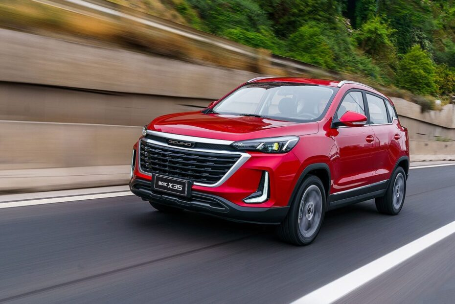
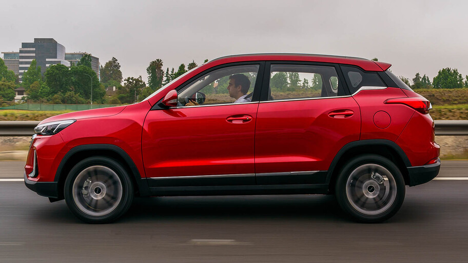
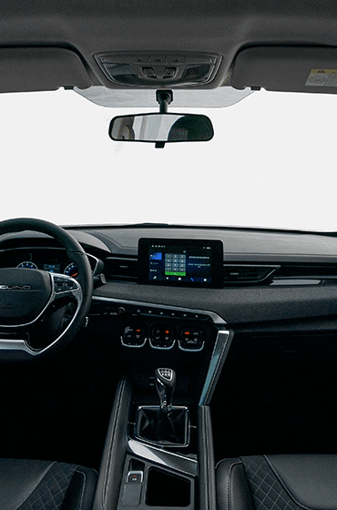
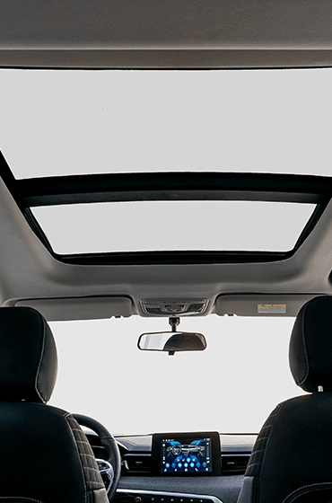

BAIC X35

Presentamos al BAIC X35 como el compañero perfecto para un viaje en familia. Sus asientos bitono le dan un look deportivo, su equipamiento tecnológico le permite ser un SUV de alto rendimiento y tener una actitud vanguardista.

Presentamos al BAIC X35 como el compañero perfecto para un viaje en familia. Sus asientos bitono le dan un look deportivo, su equipamiento tecnológico le permite ser un SUV de alto rendimiento y tener una actitud vanguardista.
El interior de la Nueva X35 es perfecto, las terminaciones que acompañan cada detalle son únicas.
El volante de la Nueva X35 está forrado en ecocuero y posee adornos cromados que inspiran clase y deportividad. Cuenta además con controles de audio + Bluetooth, entregando así una experiencia de control y confort completa al conducir, así como Control Crucero en su versión Luxury Automática.
Los detalles de la Nueva X35 cautivan a todos por la elegancia y el sentido deportivo que brinda a todos los usuarios. Un frente atractivo y aerodinámico le dan a la X35 un carácter dominante y un perfil que se adapta a los cami nos. Asimismo tiene modernos faros antiniebla delanteros y traseros con un diseño novedoso
Controlador de las 4 ventanas y espejos laterales. Además cuenta con sistema AUTO en la ventana del conductor. El Sistema de Suspensión delantera es independiente McPherson y la trasera integra barra de torsión tipo H, incrementando la estabilidad en el manejo y en el frenado a altas velocidades.
